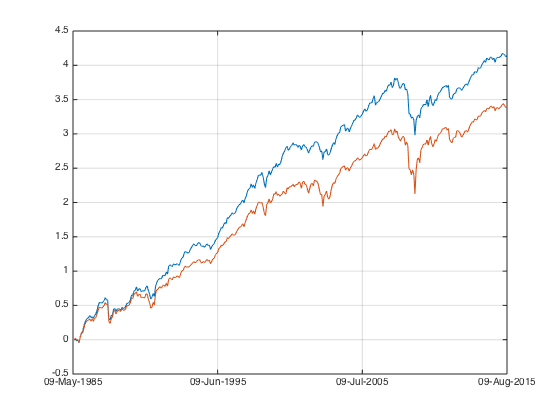
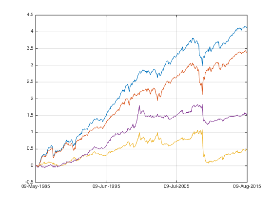
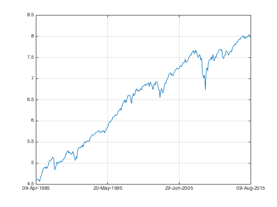
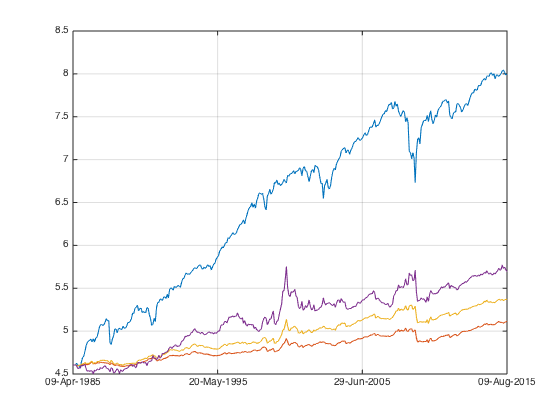
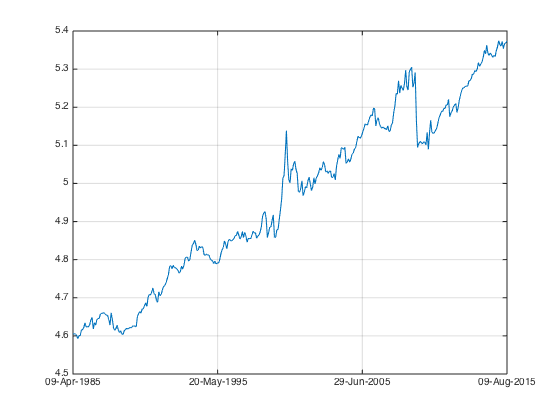
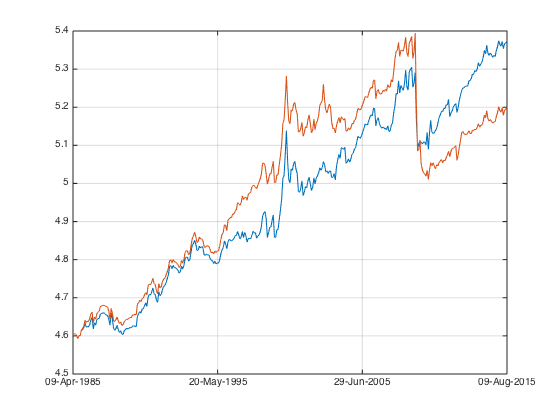
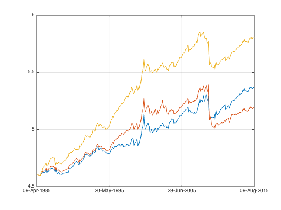
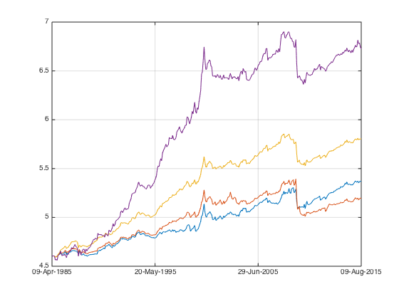
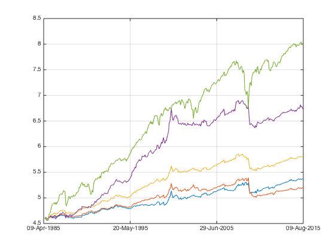

Multiple Factors - Revisit MOM
time to go back to the basic.
Contents
Load Data
Let's load the data from ..
load('../data_equity_list_us.mat'); load('../data_field_list.mat'); load('../data_historical_data_us.mat');
take data sample, load data & the list
index = datasample(1:1300,1000,'Replace',false);
px = fun_load_price(history_us, equity_list_us, index);
px = fun_clean_data(px);
list = equity_list_us(index,:);
calculate MOM
mom_ts = fun_calculate_mom(px);
give me the score, please
score_mom_ts = fun_calculate_score(mom_ts,list,'sectorsort',px);
Weight*Return
portfolio_weight_ts = fun_portfolio_weight_sector_neutral(score_mom_ts,'longonly'); portfolio_longonly_rt_ts = fun_portfolio_return(px, portfolio_weight_ts); portfolio_weight_ts = fun_portfolio_weight_sector_neutral(score_mom_ts,'equalweight'); portfolio_equalweight_rt_ts = fun_portfolio_return(px, portfolio_weight_ts); plot(cumsum(portfolio_longonly_rt_ts)); legend('off'); hold on; plot(cumsum(portfolio_equalweight_rt_ts)); legend('off'); [sqrt(12)*sharpe(fts2mat(portfolio_longonly_rt_ts(50:end)),0) sqrt(12)*sharpe(fts2mat(portfolio_equalweight_rt_ts(50:end)),0)] snapnow;
ans =
0.7761 0.5604
 The force is strong with this one.
portfolio_weight_ts = fun_portfolio_weight_sector_neutral(score_mom_ts,'longshort'); portfolio_longshort_rt_ts = fun_portfolio_return(px, portfolio_weight_ts); portfolio_weight_ts = fun_portfolio_weight_sector_neutral(score_mom_ts,'topm',0.1); portfolio_topm_rt_ts = fun_portfolio_return(px, portfolio_weight_ts); plot(cumsum(portfolio_longshort_rt_ts)); legend('off'); plot(cumsum(portfolio_topm_rt_ts)); legend('off'); hold off; snapnow; [sqrt(12)*sharpe(fts2mat(portfolio_longshort_rt_ts(50:end)),0) sqrt(12)*sharpe(fts2mat(portfolio_topm_rt_ts(50:end)),0)]
ans =
0.1099 0.3987
I like those sharpe numbers!
corrcoef(fts2mat(portfolio_longshort_rt_ts(50:end)), fts2mat(portfolio_equalweight_rt_ts(50:end))) corrcoef(fts2mat(portfolio_topm_rt_ts(50:end)), fts2mat(portfolio_equalweight_rt_ts(50:end)))
ans =
1.0000 -0.5435
-0.5435 1.0000
ans =
1.0000 -0.2748
-0.2748 1.0000
negative negative negative~ way to go.
Sequential
let's do sequential on this one.
give me my benchmark
portfolio_weight_eq_weight_ts = fun_portfolio_weight_sector_neutral(score_mom_ts,'equalweight'); portfolio_rt_ts = fun_portfolio_return(px, portfolio_weight_eq_weight_ts); benchmark = [100; 100*exp(fts2mat(cumsum(portfolio_rt_ts)))]; benchmark_ts = fints(px.dates, benchmark,'EqualWeightIndex'); plot(log(benchmark_ts)); legend('off'); hold on;
let's rock
portfolio_weight_ts = fun_portfolio_weight_sector_neutral(score_mom_ts,'topmlongonly',1); portfolio_cap_ts = fun_sequential_backtest_autoadjust(100, px, benchmark_ts, portfolio_weight_ts,false); plot(log(portfolio_cap_ts)); legend('off'); sqrt(12)*sharpe(fts2mat(tick2ret(portfolio_cap_ts)),0) corrcoef(fts2mat(tick2ret(portfolio_cap_ts)), fts2mat(tick2ret(benchmark_ts))) portfolio_weight_ts = fun_portfolio_weight_sector_neutral(score_mom_ts,'longonly'); portfolio_cap_ts = fun_sequential_backtest_autoadjust(100, px, benchmark_ts, portfolio_weight_ts,false); plot(log(portfolio_cap_ts)); legend('off'); sqrt(12)*sharpe(fts2mat(tick2ret(portfolio_cap_ts)),0) corrcoef(fts2mat(tick2ret(portfolio_cap_ts)), fts2mat(tick2ret(benchmark_ts))) portfolio_weight_ts = fun_portfolio_weight_sector_neutral(score_mom_ts,'topmlongonly',0.1); portfolio_cap_ts = fun_sequential_backtest_autoadjust(100, px, benchmark_ts, portfolio_weight_ts,false); plot(log(portfolio_cap_ts)); legend('off'); sqrt(12)*sharpe(fts2mat(tick2ret(portfolio_cap_ts)),0) corrcoef(fts2mat(tick2ret(portfolio_cap_ts)), fts2mat(tick2ret(benchmark_ts))) hold off; snapnow;
ans =
0.4134
ans =
1.0000 -0.2633
-0.2633 1.0000
ans =
0.4462
ans =
1.0000 -0.2977
-0.2977 1.0000
ans =
0.3380
ans =
1.0000 -0.3717
-0.3717 1.0000
 look at those sharpes... zz
let's check on partial hedge.
something to compare to..
portfolio_weight_ts = fun_portfolio_weight_sector_neutral(score_mom_ts,'longonly'); portfolio_cap_ts = fun_sequential_backtest_autoadjust(100, px, benchmark_ts, portfolio_weight_ts,false); plot(log(portfolio_cap_ts)); legend('off'); hold on; sqrt(12)*sharpe(fts2mat(tick2ret(portfolio_cap_ts)),0) corrcoef(fts2mat(tick2ret(portfolio_cap_ts)), fts2mat(tick2ret(benchmark_ts)))
ans =
0.4462
ans =
1.0000 -0.2977
-0.2977 1.0000
 going partial.
capital neutral.
portfolio_weight_ts = fun_portfolio_weight_sector_neutral(score_mom_ts,'longonly'); portfolio_cap_ts = fun_sequential_backtest_partial(100, px, benchmark_ts,1, portfolio_weight_ts,false); plot(log(portfolio_cap_ts)); legend('off'); hold on; sqrt(12)*sharpe(fts2mat(tick2ret(portfolio_cap_ts)),0) corrcoef(fts2mat(tick2ret(portfolio_cap_ts)), fts2mat(tick2ret(benchmark_ts)))
ans =
0.3270
ans =
1.0000 -0.4378
-0.4378 1.0000
 AQRish...... but they got it wrong.
target for 0 correlation
portfolio_weight_ts = fun_portfolio_weight_sector_neutral(score_mom_ts,'longonly'); portfolio_cap_ts = fun_sequential_backtest_partial(100, px, benchmark_ts,0.85, portfolio_weight_ts,false); plot(log(portfolio_cap_ts)); legend('off'); hold on; sqrt(12)*sharpe(fts2mat(tick2ret(portfolio_cap_ts)),0) corrcoef(fts2mat(tick2ret(portfolio_cap_ts)), fts2mat(tick2ret(benchmark_ts)))
ans =
0.6880
ans =
1.0000 -0.0128
-0.0128 1.0000
 zero correlation with benchmark, the portfolio sharpe is 0.7...
top 0.1
portfolio_weight_ts = fun_portfolio_weight_sector_neutral(score_mom_ts,'topmlongonly',0.1); portfolio_cap_ts = fun_sequential_backtest_partial(100, px, benchmark_ts,0.85, portfolio_weight_ts,false); plot(log(portfolio_cap_ts)); legend('off'); hold on; sqrt(12)*sharpe(fts2mat(tick2ret(portfolio_cap_ts(70:end))),0) corrcoef(fts2mat(tick2ret(portfolio_cap_ts(70:end))), fts2mat(tick2ret(benchmark_ts(70:end))))
ans =
0.6539
ans =
1.0000 -0.0715
-0.0715 1.0000
 correlation down to 0.
% let's add some reference plot(log(benchmark_ts)); legend('off'); hold off
wow it's roofing. a portfolio of 80+ securities 85% hedge achieved such a good result? let's drop a PIN OF SUSPICION here.
imshow('suspicious.png');